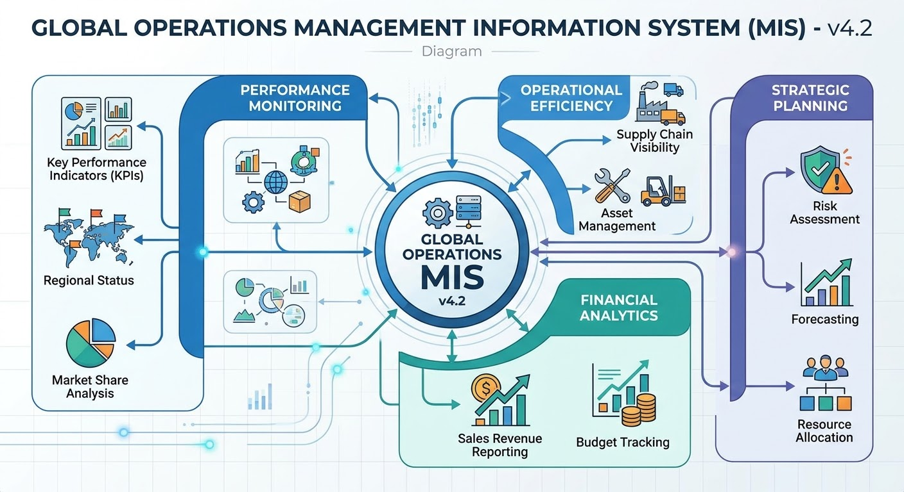

Exploring MIS and AIWebsite OverviewAbigail Branch | Alex Tapia | Jacob Mathews | Kate Flanagan | Sirri SuhOctober 20, 2026Home| AI Usage | Security | About Us  Management Information Systems (MIS) and Artificial Intelligence (AI) are an inevitable part of daily life. They are in places many of us aren’t even aware of. This website will provide an overview of some of the ways we see MIS and AI. Overviews of AI’s correct and incorrect uses, as well as some of the dangers of AI can be explored throughout the website. AI can be a useful tool, but it is one that needs to be used with much discretion and care. Management Information Systems (MIS) and Artificial Intelligence (AI) have become woven into everyday life, often in ways we don’t even notice. This website offers an overview of how MIS and AI appear in the world around us, highlighting both appropriate and inappropriate uses. It also explores potential risks and challenges associated with AI. While AI can be an incredibly powerful and helpful tool, it must be used thoughtfully, responsibly, and with careful consideration. MIS Topics
|